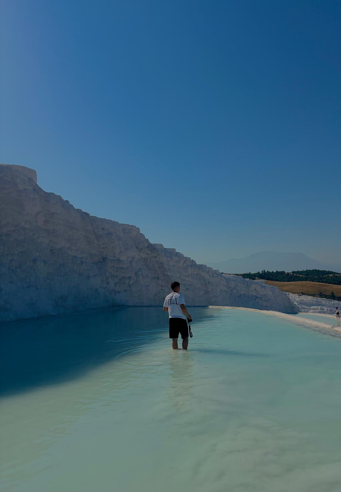

Bucharest, Romania
Biography & Kit
About Me
Capturing moments in transit, public transport, and urban geometry.
I'm @andreuptm, an urban, transport, and aviation photographer based in Bucharest, Romania. My work focuses on capturing everyday public movement, architectural geometry, city motion, and airshow dynamics.
Gear & Equipment
Camera Bodies
Nikon D7000 • Sony NEX-3N
Lenses
AF-S DX NIKKOR 35mm f/1.8G • 18-105mm VR • Sony 16-50mm OSS
Post-Processing
Adobe Lightroom & Photoshop